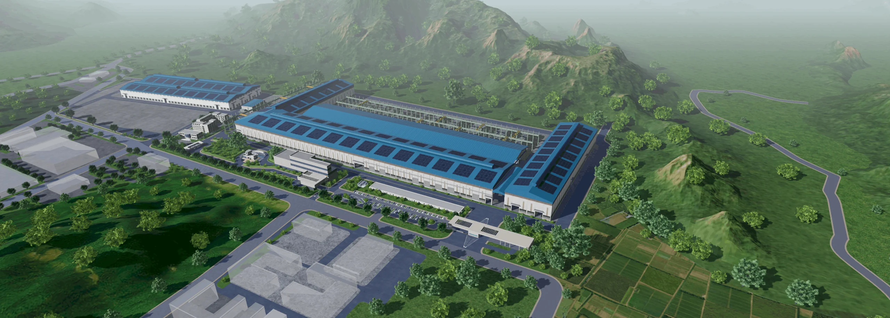
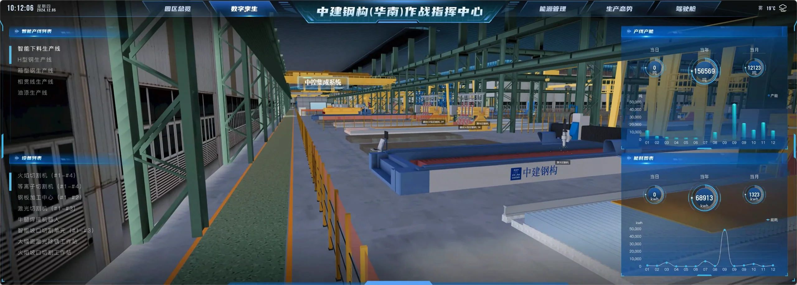
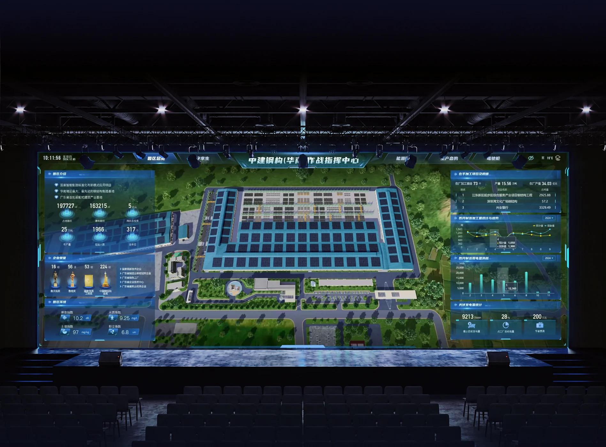

在哪里
三维场景，找到园区与设备。

园区 · 工厂 · 产线
园区 3D 可视化驾驶舱
将园区、设备与运行数据放在同一视图中。
这组设计用三维场景展示园区、工厂与产线，帮助用户了解布局、查看运行情况并定位异常。
我的设计重点是连接场景与数据：先看全貌，再找到设备，最后查看详情。
三维场景，找到园区与设备。
数据界面，看清进度与状态。
从需求、布局到效果验证，让三维场景与数据展示配合起来。
确认使用者、观看距离与重点数据。
输出 / 需求清单先展示概况，再提供分析与详情。
输出 / 页面布局确定场景视角，为文字与图表留出空间。
输出 / 场景视角让数据对应到具体建筑、产线与设备。
输出 / 数据对应关系统一场景、面板、图表与状态提示。
输出 / 视觉规范检查大屏阅读、视角切换与数据显示。
输出 / 调整清单先看目标、进度与异常，判断需要关注的区域。
从园区进入车间，再找到具体设备。
用全景与少量说明，快速了解园区。
了解园区时突出场景，分析经营时突出数据。按查看目的调整布局。
中间展示园区，两侧分别查看基本信息与运行状态。
厂房与道路帮助辨认位置，山体与环境提供参照，重点建筑保持突出。
先看厂房与道路布局，再查看具体区域。
核心厂房与设备清楚呈现，环境适度弱化。
提前安排面板位置，避免遮挡重要建筑与设备。
园区全景与运行数据同屏展示，快速了解当前状态。
用颜色提示状态，用字号区分主次，减少无关光效。
蓝青色用于日常数据，暖色提示异常，并配合文字或图标。
产量 / 能耗 / 进度
辅助信息标题、数值、单位与状态分清主次，示意数据用于展示样式。
统一模块间距与对齐方式，按大屏尺寸调整文字与信息密度。
按园区、车间、产线、设备逐层进入，每一层都有对应的运行数据。
点击车间入口即可进入，不必手动在三维场景中寻找。
先看用电总量，再看变化与异常，定位需要关注的设备。

从全景进入厂房，导航与数据面板保持固定，方便继续查看。
五段产品录屏，展示园区、设备、能源、生产与经营情况。
移动视角查看厂房，两侧数据保持固定，方便持续阅读。
定位工厂区域，查看人员、产量与用电情况。
沿用园区场景与界面样式，
根据任务调整数据重点。
点击设备后在附近显示详情，先看重点，需要时再深入查看。
用名称与型号确认当前设备。
先看当前状态，再看变化，单位与时间标明。
详情可随时关闭，继续查看场景。
在模拟产线中展示设备动作与物料移动，直观了解生产过程。
只突出正在运行的设备，避免整屏闪烁。
主要生产动作连续展示，辅助光效保持克制。
视频进入画面后播放，离开后暂停，减少加载负担。
在实际屏幕与观看距离下，检查文字、数据和场景是否清楚。

标题与重点数据是否容易看到？
单位、图例与详情是否清楚？
切换视角后，是否仍能找到目标设备？
长名称、数据缺失与加载中是否有清楚提示？
从园区全貌到设备详情，
让位置与数据对应，
让查找与判断更高效。